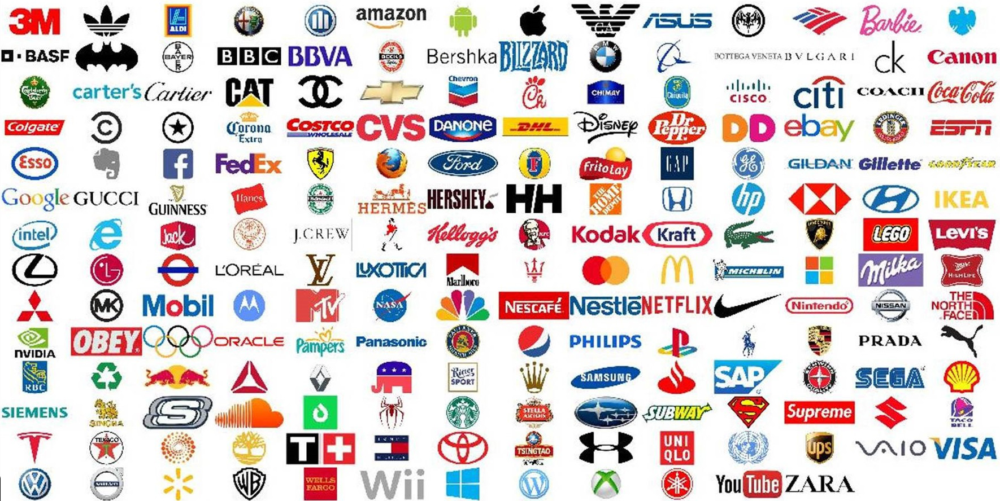

WebLogo-2M Dataset
Description
The WebLogo-2M dataset is a weakly labelled (at image level rather than object bounding box level) logo detection dataset. The dataset was constructed automatically by sampling the Twitter stream data. It contains 194 unique logo classes and over 2 million logo images. It features with large scale but very noisy labels across logos due to the inherent nature of web data. Generally, these weakly labelled logo images are used for model training. Therefore, this dataset is designed for large-scale logo detection model learning from noisy training data with high computational challenges. For performance evaluation, we further provide 6, 569 test images with manually labelled logo bounding boxes for all the 194 logo classes.
Statistics
| Logo Classes | Image Pool | Per-Class Noise Rate | Testing Images |
|---|---|---|---|
| 194 | 2,190,757 | 25.0%~99.8% | 6,569 |
Icons of all 194 logo classes

Download
Total size: 178.1GB
Part 1 (3m-android, 24.9GB); Part 2 (apple-citi, 21.2GB); Part 3 (coach-evernote, 21.4GB); Part 4 (facebook-homedepot, 25.1GB); Part 5 (honda-mobil, 20.4GB); Part 6 (motorola-porsche, 21.9GB); Part 7 (prada-wii, 23.1GB); Part 8 (windows-zara, 20.3GB); Evaluation/Test Data (1.1GB); Logo Icons; README
Changelogs
- 7/March/2018: Added logo icons download link.
- 25/Aug/2017: upgraded from 1.9M (1,867,177) to 2.2M (2,190,757) total logo images
Reference
Hang Su, Xiatian Zhu, Shaogang Gong. Deep Learning Logo Detection with Data Expansion by Synthesising Context IEEE Winter Conference on Applications of Computer Science (WACV), Santa Rosa, USA, March 2017. arxiv bibtex
Hang Su, Shaogang Gong, Xiatian Zhu. WebLogo-2M: Scalable Logo Detection by Deep Learning from the Web IEEE International Conference on Computer Vision, Workshop on Web-scale Vision and Social Media, Venice, Italy, October 2017. arxivbibtex
Contact
For any queries, please contact Hang Su at hang.su@qmul.ac.uk
Licence
Please notice that this dataset is made available for academic research purpose only. All the images are collected from the Internet, and the copyright belongs to the original owners. If any images belong to you and you would like them to be removed, please kindly inform us.